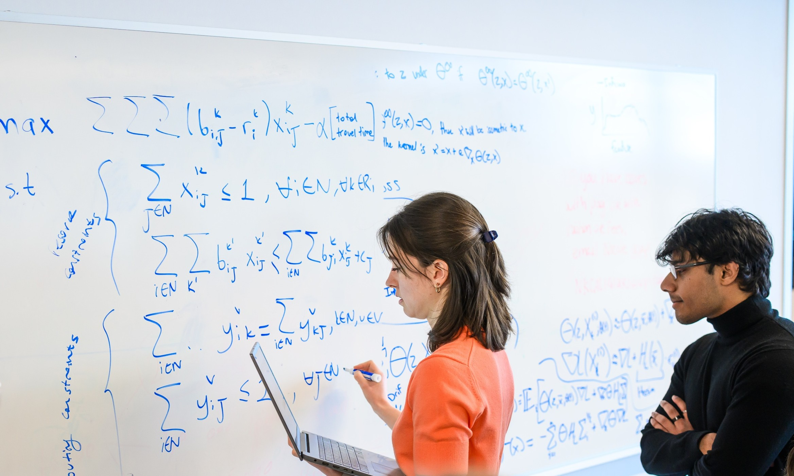
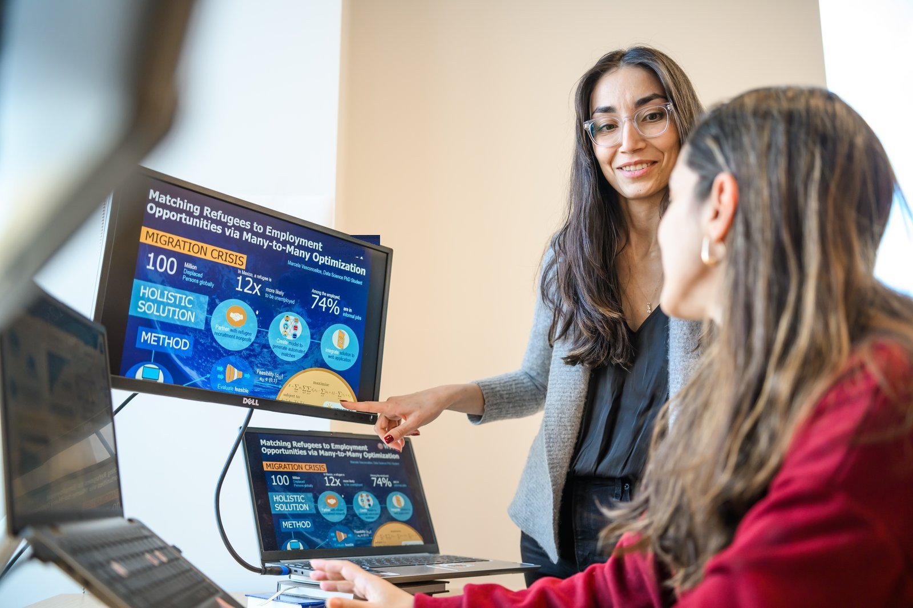
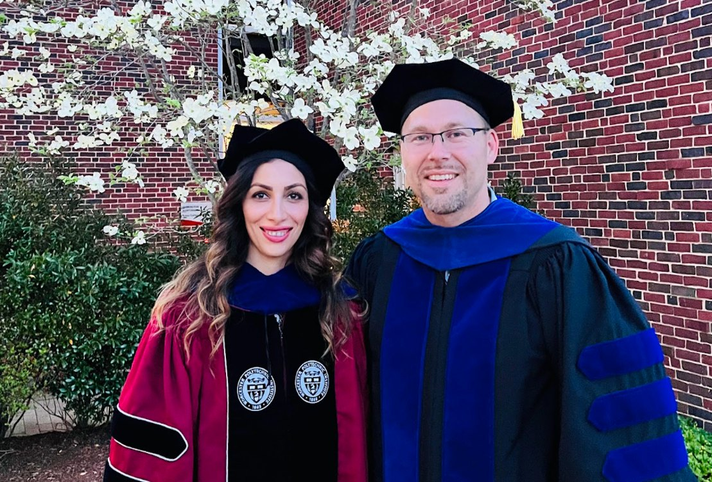

For prospective researchers
Most of the systems holding up other people's lives still run on rules of thumb. The math and algorithms to do better exist, and the researchers do, too. They just haven't yet recognized themselves in the call. If you've been wondering where this kind of work happens, here is your opening.
What I'd like to hear from you
The fit
I'm deliberate about the researchers I take on. What follows is a portrait, not a checklist. If it mostly sounds like you, please reach out.
You're at ease with discrete math, linear algebra, and probability. Integer programming, nonlinear optimization, and stochastic programming are familiar territory, or you're ready to build that depth.
The problems we work on rarely come well-posed. They arrive as messy human realities – a refugee placement, a foster care routing, a nonprofit resource exchange – and you translate them into mathematical models that hold their own.
I don't assign problem sets, but rather problem spaces and trust you to explore them thoroughly. You're the kind of researcher who, given a piece of territory, takes ownership, working through your own questions before bringing back ones that need a second voice.
Industry uses optimization to maximize quarterly returns. The same math, answering questions that restore dignity and agency, can change the lives of people no one stops to ask. If that distinction resonates, you may be closer to home than you know.
The work
Most of the math I do lives in places where allocation decisions are matters of dignity. Refugee resettlement. Child welfare operations. The operational backbone of organizations responding to human trafficking and to homelessness. These aren't side projects with academic curiosity attached: they're public-sector systems where the math, done right, changes outcomes for people who would remain unregarded.
Methodologically: integer and stochastic optimization, matching and mechanism design, hybrid predictive-plus-prescriptive methods. Practically: every model has a partner organization on the other end. Many papers become systems others use.
We work in human service systems, in areas where people have less voice and choice.

Refugee-to-employment matching, in practice.
The experience
Depth over throughput: I'm selective, and the lab is growing.
Here's what working together looks like.
Small groups and regular one-on-ones. I aim to know what each researcher needs and to make expectations and feedback clear. We celebrate wins as a team: defenses, conference talks, the first time an organization puts into action something we built.
You'll have ownership over a research direction, not a problem set. The boundaries are something we construct together, in conversation, and their definition is earned as trust builds. What you do inside the boundaries is up to you.
Academia for some members: postdoc and faculty roles. Industry for others: places like Meta, Bank of America, Dell, and MariaDB. Other students graduate to new academic positions at places like Cornell, Georgia Tech, and Southern California. Some take their own routes. What stays consistent is the depth of training: years later, the work it enabled continues.

A member, at the other side of the journey.
If you've read this far
Three thoughtful paragraphs from you can tell me more than a polished CV (those are also helpful!). Either way reaches me directly.
or simply email trappa@rpi.edu